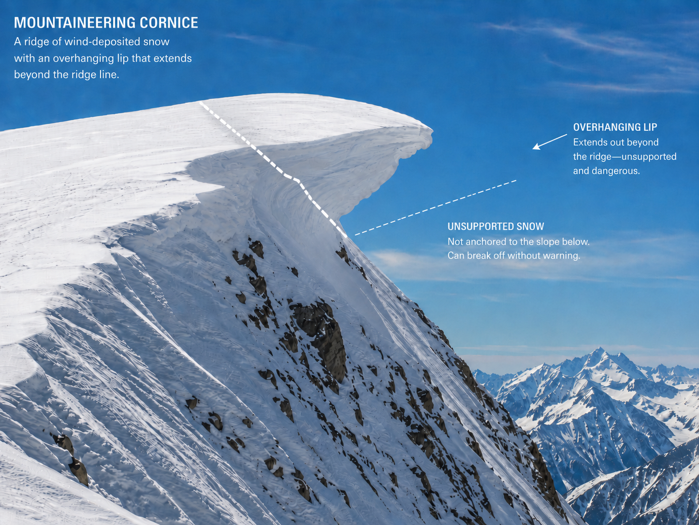
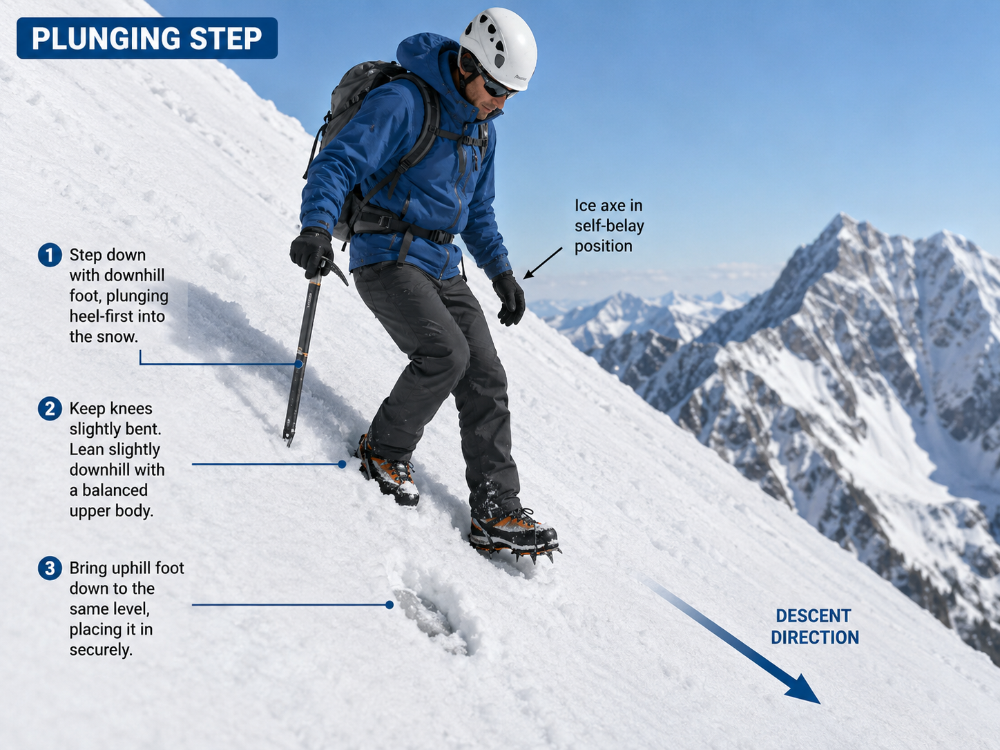
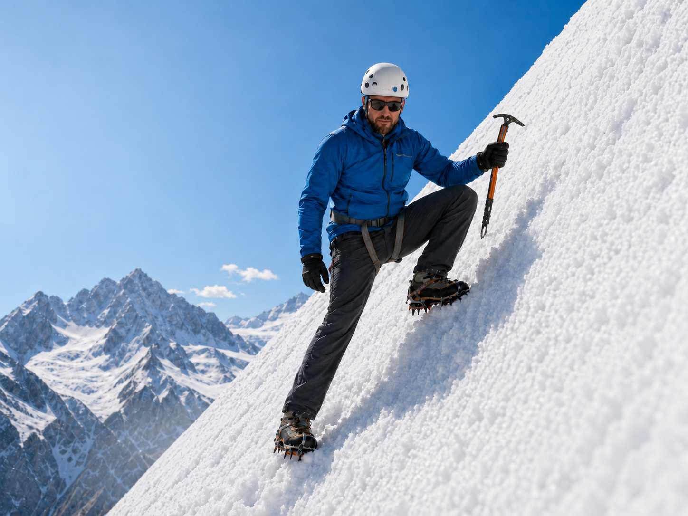

Covers moving together as a roped team on a glacier: setup, movement, crossing hazards, route finding, terrain technique, and team health. Does not cover crevasse rescue, anchor building, or avalanche assessment.
1. Rope Team Setup
Team Size
A minimum of three people per rope team is recommended. Two survivors are needed to build a hauling system if someone falls into a crevasse. Two-person glacier travel is higher risk and requires advanced rescue proficiency. Solo glacier travel is not recommended.
Crevasse Width Drives Rope Spacing
The single most important factor in rope spacing is the expected crevasse width for the specific glacier. The goal: only one person crosses a snow bridge at a time while the rest can arrest a fall.
WCR / Mountaineers formula (from WCR Deck 2):
3+ person team: interval = crevasse width + 0.5–1 m
2-person team: interval = crevasse width × 1.25 (25% longer than the crevasse)
Add ~5 m for tie-in knots and rescue throw rope
Mountain / Region
Avg crevasse width
Interval (3-person)
Min rope
Cascades — Baker, Rainier
8–10 m
10–11 m
50 m
Canadian Rockies, Andes
5–8 m
6–9 m
50 m
Grand Teton area glaciers
5–12 m
6–13 m
50–60 m
Alaska Range — Denali
up to 30 m (100 ft)
put all rope out
60 m
Himalaya
up to 30 m+
put all rope out
60 m
Baker/Kulshan sizing from WCR Deck 2. Alaska/Himalaya per American Alpine Institute. When in doubt, err toward more spacing.
Figure 1 — Rope spacing is determined by expected crevasse width, not a fixed formula. Only one climber crosses a bridge at a time; the rest brace to arrest.
Fast field spacing mnemonic
Some courses teach 10 - rope-team size arm-length pulls between climbers: 4-person team = 6 pulls, 3-person team = 7 pulls. Treat this as a rough check, not the primary rule. Define the "arm length" before travel and verify it against measured spacing; a single short arm reach is too short, while a full arm-span / full rope pull varies by person. Expected crevasse width still controls final spacing.
Team Order
This topic has multiple valid perspectives. Decide the order deliberately and brief the reason before roping up.
Situation
Front
Middle
Last / uphill anchor
Ascending / traversing up
Best route finder and pace setter
Least experienced or lightest if the ends are stronger
Strongest / heaviest if possible
Descending
Best route finder unless terrain demands otherwise
Least experienced if protected by strong ends
Strongest / heaviest, and ideally rescue-capable
Direction-dependent adjustment: On ascent, the uphill / last climber has the best gravity-assisted arrest position. On descent, the strongest or heaviest climber usually stays last / uphill, because a heavy leader falling downhill is harder for lighter uphill climbers to stop.
Where the debate is
The best route finder may need to lead; the best rescuer may be most useful at the back where they can see the team and initiate response. If those are different people, choose based on the day's terrain and explicitly assign navigation, arrest, and rescue leadership roles.
Knots and Tie-In
Middle climbers: Butterfly knot at the rope's midpoint; clip to harness belay loop with one locking + one non-locking carabiner, gates opposed and reversed. Clip to the knot — do not thread rope directly through tie-in points, which is harder to manage in a rescue.
End climbers: Figure-eight follow-through or bowline at the rope end.
Two-person brake knots: Brake knots are primarily a two-person rope-team tactic. Tie 4–5 modified figure-eights on a bight between climbers, spaced roughly every 2 m. ENSA studies show these significantly reduce fall distance and make the surface-climber arrest easier. Each brake knot uses ~1 m of rope; dress each to a compact loop, not a large bight. For 3+ person teams, use knots only if the leader has trained that specific system and explains how it changes rope handling and rescue.
Prusik Backup
Each climber attaches a prusik loop from their harness to the rope ahead of them. The prusik rides passively while walking and grips under tension during a fall. Position it snug to the tie-in knot — close enough to load immediately.
Coiling the Tail
End climbers coil excess rope as a butterfly (chain) coil and secure it at the top of the pack or with a Voile strap externally. This coil is rescue rope — it must be immediately accessible, not buried inside the pack.
Pre-Travel Check
Harness buckles doubled back
Tie-in knots dressed and set
Prusik attached and positioned
Crampons secure, no loose points
Ice axe leash on
Beacon on and confirmed in transmit mode
2. Moving as a Rope Team
Rope on the Downhill Side During a Traverse
On any traverse across a slope, the rope must run on the downhill side of the climbers. If the rope is on the uphill side and someone falls, the rope will sweep across the slope and can knock the rest of the team off their feet. With the rope on the downhill side, a falling climber pulls the team toward the slope — a recoverable arrest position.
On every direction change during a traverse, consciously check: is the rope below me or above me?
Rope Tension
The rope should hang at roughly 45° from the harness and just barely touch the snow — slightly taut, never coiled at your feet, never pulling your partner. You should feel the rope's weight, not be pulled by it.
Too slack: Greater fall distance; more velocity when the rope loads.
Too taut: Jerky movement, disrupts partner's balance; communicates nothing useful.
⚠️ Do Not Step on the Rope — This Is Your Lifeline
Never step on or over the rope. A rope walked on gets buried in snow, becomes extremely difficult to manage in an emergency, and can be damaged by crampon points. If the rope is at your feet, shout "rope" and let the team adjust tension before you step.
Communication Signals
Verbal calls work in good conditions. Agree on rope-tug signals before travel for whiteout and darkness — your voice will not carry in wind, and you may not be able to see your partners even 10 m away. In a complete whiteout with high winds, the rope may be the only communication channel you have.
Call
Tug signal
Meaning
Stop
1 tug
Stop all movement now
Okay
2 tugs
Okay to move
Slack
Pull rope toward you
Give me rope (I need slack)
Up rope
Tug toward you
Take in rope
Falling!
Sudden strong pull
Arrest immediately
Rock! / Ice!
—
Overhead hazard — cover up, do not look up
Negotiate your tug system before you leave the trailhead. Write it on tape on your axe shaft if you need a reminder.
Pace
Set a pace at which the slowest team member is not sweating — a sustainable aerobic zone, not an uncomfortable one. A sweating climber is working at their limit and will fatigue quickly. Better to go slower and arrive in good condition than to push pace and stop repeatedly.
Rest step (uphill): Lock the trailing knee completely straight after each step, hold for one full breath, exhale forcefully through pursed lips (pressure breathing), then advance. This loads the skeleton instead of the muscle. A team using the rest step consistently will outperform one that pushes hard and stops to recover.
Zigzag and Switchback Rope Behavior
When the team changes direction on a switchback, the rope behaves predictably but catches many teams off guard:
When the leader turns: The rope becomes very slack — the leader is now moving toward the second climber instead of away.
When the follower approaches the turn point: The rope becomes very tight — the leader has turned and is moving away at an angle while the follower has not yet turned.
Best practice:
The leader pauses briefly after completing the turn to let slack recover naturally.
The follower calls "slack" when approaching the turn point; the leader gives slack actively.
Middle climbers act as a buffer — don't all bunch up at the turn at once.
Everyone turns at the same physical spot, not at their own preferred position.
After the turn, re-check that the rope is still on the downhill side. If the turn put the rope uphill, pause and step around until it is downhill again.
Ice Axe While Moving
Carry the axe in the uphill hand in cane position: pick rearward, palm on adze, shaft planted in the snow ahead with each step. Swap hands when direction reverses. Never carry the axe across the body on a traverse.
Crampon Discipline
Splay feet slightly apart and lift each foot deliberately — never shuffle. Never cross feet on steep terrain. Keep crampons away from the rope.
3. Immediate Fall Response
The window is one to two seconds.
The goal is to stop the slide before the rope comes taut with velocity. Every team member arrests simultaneously — no waiting to feel tension.
When someone shouts "Falling!":
Every climber drops and self-arrests immediately — no hesitation.
Axe across the chest: pick pressed into snow near the shoulder, spike lifted.
If wearing crampons, bend the knees and lift the feet while sliding so the points do not catch, flip you, or wrench an ankle or knee.
Once the slide is stopped and you are in control, kick boot toes or crampon points into the slope to build a platform.
Transfer as much load as possible into the legs. The axe and arms are the protection and backup, not the main long-term anchor.
Hold the arrest position until the whole rope team is stable; do not stand up early.
Why everyone arrests at once: If one climber hesitates, the rope loads at speed. A late arrest is far harder and may fail entirely.
Limitation: Self-arrest is unreliable above ~40° on hard ice. Prevention through crampon footwork is the primary tool on steep terrain.
Video references — recommended before any glacier trip:
Alpine & Mountaineering: The Self-Arrest | Climbing Tech Tips
A running belay allows the team to move together while the rope runs through one or more snow pickets as protection. If someone falls, the picket (in theory) arrests the fall. It is faster than a stationary belay but provides less reliable protection.
When to Use It
A running belay is a leader judgment call. The leader decides whether the terrain, snow quality, fall consequence, and team speed justify it; followers mainly need to know how to pass each piece without stopping the rope. It may be appropriate for:
Moderate traverses with a cliff or crevasse edge on one side (fall = going over the edge)
Crossing a snow bridge where fall risk is elevated but terrain below is manageable
Short crux sections on otherwise easy terrain
Descent of short moderate slopes where a tumble needs stopping
How the Leader Places the Piece
Drive the picket into snow at ~25° past vertical, angled away from the expected load direction.
Hammer it flush using the adze of the ice axe.
Clip a locking carabiner to the top hole, gate facing away from the direction of pull.
Clip the rope through the carabiner. Thread the live rope strand — do not push a bight through.
How Followers Clip Through Quickly
As each follower reaches the picket:
Call "picket" and slow enough to work cleanly without dumping slack into the rope.
Stay below or level with the piece until your tie-in knot is close enough to manage.
Clip the rope strand behind your tie-in through the anchor carabiner, or through a second carabiner on the picket if the leader set one.
Confirm the trailing strand is seated and the gate is closed.
Unclip the rope strand in front of your tie-in.
Move past the piece, call "clear," and rebuild normal rope tension.
The last person collects each picket as they pass. Getting pieces back to the leader efficiently:
Relay method (recommended on glacier):
Last person retrieves the picket, carries it to the next rest or pause.
Last passes the picket to the middle climber.
Middle passes it to the leader at the next opportunity.
This avoids the last person running to the front and disrupting rope order.
Swap / leap-frog method:
The team stops.
Last person walks to the front with the picket and becomes the new leader.
Old leader walks to the back. Roles swap; team moves again.
Do not remove active protection while anyone still depends on it.
It is normal for retrieved pickets to collect briefly with one person before a swap or hand-off. What matters is that the next leader has enough pieces before the next protected section, and that no picket comes out while the team is still exposed to the hazard it protects.
5. Snow Bridge and Crevasse Crossing
Assessing a Bridge
Visual: Is the snow sagging, dark-tinted, or arching? Wide, flat, bright-white bridges are stronger. Any sign of subsidence is a warning.
Probe: Use an avalanche probe pole (preferred — longer and more precise than an axe shaft). Push at 45° with firm pressure. If it drops through easily, find another crossing. An axe shaft is a backup if no probe is available.
Sound: A hollow thump when probing or stepping indicates air space below.
Time of day: Morning is safer. Bridges weaken as heat builds.
Mark Dangerous Spots
When the leader identifies a dangerous spot — a thin bridge, a hidden crevasse, a section of weak snow — mark it with an X in the snow using the axe pick or boot, or place the axe shaft across the danger area. Followers must step around the mark, not on it. This is especially important in whiteout, where followers cannot see what the leader has assessed.
Crossing Angle — Always Perpendicular
Figure 2 — Always cross a crevasse perpendicular to it. A rope running parallel provides almost no arrest capability if the crossing person falls through.
Crossing Protocol
Orient the team perpendicular to the crevasse.
One person crosses at a time. Remaining climbers brace in arrest-ready position.
Follower coordination — give slack: The climbers behind must watch the crossing person and actively give enough slack so the leader can move quickly and without stopping. A follower keeping the rope tight stops the leader at the most dangerous point on the bridge. The team's job during a crossing is to watch, stay ready to arrest, and allow cooperative movement.
Move well clear of the landing zone before the next person starts.
Common mistake: follower pulls tight on the bridge
If you feel taut on a bridge crossing, give slack immediately. Your job is to be arrest-ready on the far side — not to act as a brake while the leader is still mid-bridge on the weakest part of the snow.
When the Leader Travels Along a Crevasse
Most crossings should be perpendicular. Sometimes the leader approaches a crevasse, rejects the crossing, and moves along the crevasse to find a safer bridge. Followers should not blindly follow the leader's tracks near the lip. Keep the rope taut, move the same general direction, and turn earlier so the follower stays offset and farther from the crevasse while the leader searches.
When the leader travels along a crevasse looking for a bridge, followers move the same direction but turn earlier and stay farther from the lip. Do not march the whole rope team into the leader's exact near-edge track.
Jumping a Crevasse
Only when the gap is narrow enough to jump in full control.
Cross perpendicular; never jump at an angle.
Give slightly more slack so the rope does not arrest mid-air.
Land crampons flat, knees slightly bent — do not lunge forward.
Team braces immediately after landing.
If there is any doubt about landing in control, find a bridge or a different line.
6. Route Finding Through Crevasse Fields
Reading the Glacier
Before entering a crevasse zone, stop on safe ground and study the terrain:
Benches: Flat ledges across the glacier are usually the most stable travel surface.
Crevasse bands: Run roughly perpendicular to glacier flow. Look for the narrowest, most consolidated crossing point.
Color: Darker, blue-tinted snow often indicates subsidence toward a hidden crevasse.
Sagging: Any depression or arch in the snow surface that does not match surrounding terrain may be a bridge.
Choosing a Line
Travel on benches and rims; avoid convex rolls where the glacier is under tension.
Cross crevasse bands at their narrowest and most consolidated point, perpendicular.
Avoid running parallel to crevasse lines for extended distances.
When uncertain which side is safer, default to the more uphill side.
Probing
Use an avalanche probe pole as the primary probing tool — it is longer, lighter, and gives more accurate feedback than an axe shaft. Push at 45° with firm pressure. A probe dropping through easily means hidden air — reroute immediately. Probe one step ahead before each step in uncertain terrain.
GPS and Whiteout Navigation
Mark key waypoints on ascent: rope-up point, crevasse crossings, camp, summit.
In whiteout: tighten spacing, navigate on pre-planned compass bearings with altimeter checks, probe more frequently.
If position cannot be confirmed, stop and wait rather than committing to an uncertain bearing in a crevasse field.
When to Backtrack
If the line ahead closes off — bridge collapsed, band widened, visibility dropped — backtrack to the last confirmed-safe point rather than committing to uncertain terrain.
7. Objective Hazard Avoidance
These hazards cannot be controlled — only avoided or minimized. Move efficiently through hazard zones.
Cornice
Cornices are overhanging snow masses built on the lee side of ridges. They are far larger and more dangerous than they appear from below or from behind on the ridge.
Critical danger: the fracture zone extends far beyond the visible edge.
A cornice with a 10 m (30 ft) roof overhang can fracture 30 m (100 ft) or more back onto what appears to be safe flat ridge. The surface you are standing on may already be part of the cornice — you cannot tell from above where safe ground ends.

Cornice fracture reference: the visible lip is not the safe boundary. The break can start far back on the ridge surface and release unsupported snow beyond the ridge line.
Safe distance: Stay back at least twice the visible overhang depth from the apparent edge. If the overhang below appears 5 m deep, stay at least 10 m from the edge. In doubt, stay further still.
Warning signs from above:
Cracks parallel to the ridge line
Soft or hollow-sounding snow near the edge
Slight changes in snow texture toward the edge
A fracture line may angle back from the visible lip, so an existing track that looks "back from the edge" can still be on unsupported cornice.
In side view, imagine a diagonal fracture plane that starts at a weak point far back on the ridge surface and runs down toward the cornice body. The surface break can be behind the vertical projection of the cliff edge, not merely behind the visible lip.
Never rope along the very edge of a corniced ridge. Position the team entirely on the windward side.
Serac and Icefall
Serac falls have no reliable correlation to time of day, temperature, or weather. Avoidance and limiting exposure time are the only effective strategies.
Do not stop or rest beneath seracs.
Move through serac exposure zones as a coordinated team; no one waits while others stop under the hazard.
Plan the route before travel to minimize time in serac runout zones.
Rockfall
Wear a helmet at all times on the glacier.
Identify debris zones: light streaks on cliff face, dark debris on snow below walls.
Designate a spotter who watches the cliff above while the team moves; the spotter calls the alert the instant anything moves.
Call "ROCK!" or "ICE!" loudly and repeatedly; everyone covers the neck and head and presses against the slope — do not look up.
Move through rockfall zones quickly as a coordinated team; no stopping under cliff bands.
Short Rope — When to Use It
Short roping (Kiwi coil technique: coils taken around the neck and tied off, shortening the active rope to 2–5 m) is a trained guiding technique for terrain where full rope length creates more hazard than protection. Use it only when there is no crevasse exposure and the leader has practiced direct rope control.
Appropriate cases may include loose rock / scree where rope drag could trigger rockfall, short mixed approach sections where repeatedly unroping is inefficient, or moderate snow where a trained leader is directly supporting a less experienced climber.
Short rope is not a cornice or crevasse solution.
For cornices, avoidance and staying well back from the fracture zone are primary. In hidden-crevasse terrain, adequate glacier spacing is non-negotiable.
8. Ascending Steep Snow and Breaking Trail
Crampon Technique
Crampon technique shifts as slope angle increases. The key principle at every angle: keep crampon points securely in the snow before transferring weight. Never skate a crampon across the surface hoping it will catch.
French technique (flat-foot / pied plat) — moderate slopes, up to ~45°: Flex the ankle so all 10 bottom crampon points contact the snow at the same time. This is the required efficient technique on not-quite-steep terrain; do not switch to front-pointing just because the surface feels firm. On a traverse, roll the ankle downhill to keep the boot sole flat enough that every bottom point can bite.
American / hybrid technique — steeper slopes, ~45–60°: One foot stays flat while the other front-points. The flat foot provides a rest and the front-pointing foot provides security. Alternate sides before one calf burns out.
German / front-pointing — very steep slopes, 60°+: Both feet front-point. This is powerful but tiring and requires confident axe placement for balance, so reserve it for terrain where flat-foot or hybrid technique no longer works.
Kick Steps
When snow is soft enough to accept a platform, kick the toe of the boot into the slope before weighting it. On harder snow, use the boot edge. Angle each step slightly inward (into the slope) for security.
Make steps the right size: Cut each step large enough for the smallest boot on the team. If your step is too small, the next person has to re-kick it or risk a slip. On a long ascent, undersized steps compound fatigue for every follower. Keep steps close enough together that short legs can reach them — smaller steps, closer together, is safer and faster for the whole team.
Three-point balance on very steep snow: Before moving any limb, confirm that three points of contact (two crampons + axe, or one crampon + two axe grips) are secure. Move one point at a time. Do not lunge or reach — each move should be deliberate. This is the same principle as exposed rock scrambling applied to steep snow.
Ice Axe Positions on Ascent
Position
When
How
Cane (piolet canne)
Moderate slopes
Uphill hand, pick rearward, palm on adze, shaft planted ahead
Self-belay / stake
Steep; need both hands
Drive shaft vertically, grip head with both hands
Low dagger
Steep; firm snow
Grip shaft below head, press pick into snow at waist
High dagger
Very steep; firm snow
Grip over the pick with thumb on adze, press in at shoulder height
Rest Step and Pressure Breathing
Lock the trailing knee completely straight after each uphill step. Hold for one breath. Exhale forcefully through pursed lips (pressure breathing). Advance. Do not skip the rest step to go faster — a team using it consistently will outperform one that pushes hard and stops to recover.
Switchbacks
Angle across slope at 30–45° from horizontal. At the turn, face the slope and step uphill — never turn facing outward. Coordinate turns: the leader calls the turn; everyone turns at the same physical spot. See Section 2 for rope behavior during switchbacks.
Breaking Trail
Rotate before exhaustion. The leader calls "trading" when they want to swap — not after they are blown. Carry 70–80% effort at the front; reserve capacity for navigation and judgment.
Size steps for the shortest team member.
On soft snow: compress each step firmly before transferring weight. Unconsolidated steps collapse under the next person.
Use existing tracks whenever possible — even a slightly indirect boot track is faster than breaking new snow.
9. Descending Steep Snow
Reading Snow Conditions
Test by stomping the heel into the slope:
Soft snow: Heel sinks cleanly and holds → plunge step.
Hard snow: Heel skates or barely dents → face in, front-point down.
When uncertain, start cautious (face in) and reassess as you descend.
Soft Snow — Plunge Step (up to ~40°)
Stand upright, slight knee bend. Step straight downhill, striking with the heel. Let the heel sink before shifting full weight. Axe in cane position. Do not lean back — weight over the feet. Keep crampons splayed to prevent points catching gaiters.

Plunge step reference: step downhill heel-first, keep knees slightly bent, and use the axe in self-belay position.
Side-Step / Side-Facing Descent
On steeper soft snow where a straight plunge step feels insecure but facing in is not yet necessary, turn the body side-on to the slope. Keep the uphill hand and axe engaged in the snow, lower the downhill foot first, then bring the uphill foot down to the stance. Move deliberately, one step at a time, and switch sides before one leg gets tired.

Side-step reference: face partly into the slope, keep the axe engaged, and lower one foot at a time.
Hard Snow — Face In
Face the slope; front-point or flat-foot based on angle. Descend slowly, test each step before weighting it. Axe in dagger or stake position.
Shuffle step: On marginal snow, step sideways (perpendicular to fall line). Slow, secure, suitable for short exposed sections.
Descending as a Rope Team
Tighten spacing on descent — a fall builds speed faster downhill.
Every climber stays arrest-ready: axe across body, pick near the slope.
Call any stumble or uncertainty immediately.
Unrope only when completely clear of crevasse hazard.
10. Nutrition and Hydration
Eating on the Move
Appetite suppresses at altitude (notably above 3,000–4,000 m). Eat on a schedule, not by hunger.
At altitude, liquids often work when solid food does not: warm broth or sports drinks carry calories and fluid together.
Hydration
Cold air, altitude, and exertion all increase fluid loss while reducing thirst sensation. Drink on a schedule — at each checkpoint or rest, not only when thirsty. Target 3–4 L per day on a climb. Add electrolytes on long days.
Freeze-Proofing
Do not rely on a hydration bladder and straw in cold weather.
Blowing water back into the hose helps, but it is not reliable; the tube and bite valve are common failure points.
Use wide-mouth bottles instead of a bladder for cold starts and exposed travel.
Carry bottles upside down so ice forms away from the cap.
Keep bottles in insulated sleeves, inside the pack, or inside a jacket during severe cold and wind.
Start with warm water when appropriate and carry a thermos of warm liquid for pre-dawn starts, long breaks, or summit pushes.
11. Team Monitoring and Warning Signs
The rope team is a mutual monitoring system. Each person watches teammates and checks themselves.
Condition
Signs to watch for
Immediate response
Fatigue
Pace drops, rope goes slack, short responses, stumbling
Rest, eat, drink; reassess plan
AMS
Headache (worse in morning), nausea, dizziness, unusual breathlessness, poor coordination
Do not ascend; descend if worsening
Hypothermia
Shivering, fumbling with gear, confusion, frequent stops
Stop, insulate, warm calories and fluid
Frostbite
Waxy/pale/hard skin on face, fingers, toes; numbness
Rewarm immediately; do not rub
Peer-check faces every 30–45 minutes on cold exposed days. Frostbite is painless once numb — the affected person will not notice it in themselves.
Team communication culture
Any team member can call a stop at any time for any reason. Establish this before travel begins. At each reassessment point, the leader actively asks each person for status — do not wait for someone to volunteer.
Related Knowledge
Knowledge/glacier-travel/crevasse-rescue/ — crevasse rescue systems (hauling, self-rescue)
Knowledge/glacier-travel/snow-travel/ — ice axe and crampon fundamentals